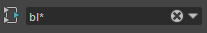

使用一些相同的热键和工具栏按钮，可以像在节点编辑器中那样，在 Hypershade 中重新绘制着色器网络。下面列出了几种可以重新绘制网络的方法。
- 重新绘制上游/下游节点：请参见节点编辑器和 Hypershade 热键。
- 添加图表模式：请参见将节点图表添加到现有图表。
- 添加选定的节点：选择节点，然后通过单击工作区工具栏中的
 将它们添加到现有图表。
将它们添加到现有图表。
- 移除节点：选择节点，然后通过单击
 将它们从现有图表中移除。有关其他热键，请参见节点编辑器和 Hypershade 热键。
将它们从现有图表中移除。有关其他热键，请参见节点编辑器和 Hypershade 热键。
-
从图表中过滤节点：默认情况下，工作区显示摄影机、着色组和着色节点。可以通过工作区标记菜单的“显示 > 对象”(Show > Objects)子菜单更改过滤器设置。
也可以按名称（在过滤器字段文本框中）过滤节点。使用 * 作为通配符。请参见Hypershade 工作区工具栏。
